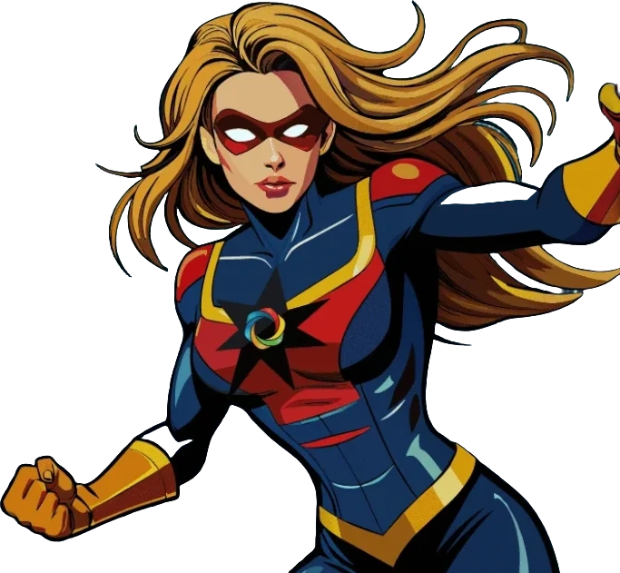

ERP-Daten rein
Export aus SAP EWM, Proalpha, AutoStore & Co. – per CSV, ohne Schnittstelle.
Stichprobeninventur aus der Cloud
Bis zu 99 % weniger Zählaufwand – PwC-zertifiziert, ohne Installation, ohne Lagerschließung.


Vollinventur heißt: jeden einzelnen Artikel zählen.
Stichprobe heißt: nur zählen, was leuchtet. Der Rest wird statistisch hochgerechnet.
Zulässig nach § 241 HGB · Beispiel-Darstellung
Selbst ausprobieren
Gerechnet mit Remiras Angabe „bis zu 99 % weniger Zählaufwand“. Das echte Potenzial hängt von Lager und Bestandsgenauigkeit ab – die kostenlose Datenanalyse rechnet es mit euren Daten.
So läuft es ab
Export aus SAP EWM, Proalpha, AutoStore & Co. – per CSV, ohne Schnittstelle.
Die Software wählt die Stichproben mathematisch-statistisch aus.
Mit Papierliste, Zähl-App oder direkt im System – mit eigenem Team.
Automatische Auswertung, fertiger Ergebnisbericht für den Wirtschaftsprüfer.
Warum es sich lohnt
Nur Stichproben zählen statt das ganze Lager.
Keine Stichtags-Schließung, kein Fremdpersonal.
Browser öffnen, registrieren, loslegen. Keine Installation.
Zertifiziertes Verfahren mit vollständiger Dokumentation.
Wir simulieren eine Stichprobeninventur mit euren echten Daten und zeigen das Einsparpotenzial. Kostenlos.
Demo: Hier würde das Anfrage-Formular öffnen.